مؤسسة الرسالة
Publisher
Resources
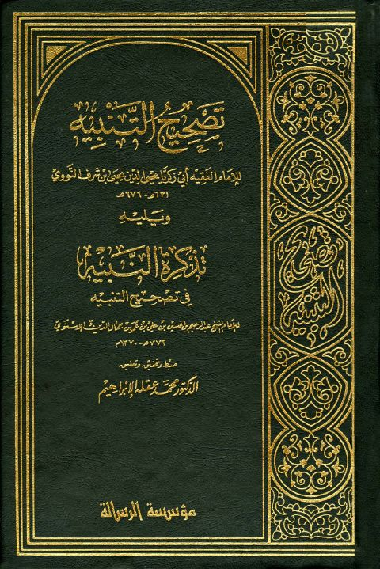
تصحيح التنبيه للنووي ويليه تذكرة النبيه للإسنوي تصحيح التنبيه للنووي ويليه تذكرة النبيه للإسنوي يحيى بن شرف النووي • عبد الرحيم جمال الدين الإسنوي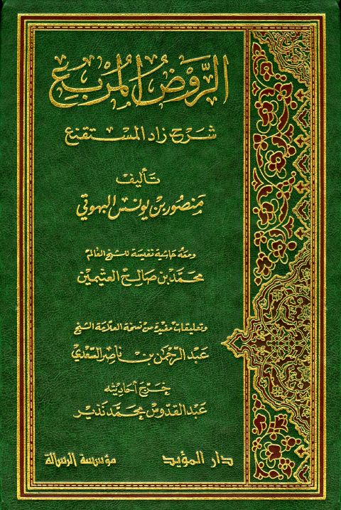
الروض المربع شرح زاد المستقنع ومعه حاشية ابن العثيمين الروض المربع شرح زاد المستقنع ومعه حاشية ابن العثيمين منصور بن يوسف البهوتي • محمد صالح العثيمين كتاب خلاصة الأحكام في مهمات السنن وقواعد الإسلام كتاب خلاصة الأحكام في مهمات السنن وقواعد الإسلام يحيى بن شرف النووي تقريب التهذيب
تقريب التهذيب
أحمد بن علي بن حجر العسقلاني
تقريب التهذيب
تقريب التهذيب
أحمد بن علي بن حجر العسقلاني
 تهذيب التهذيب- ط الرسالة
تهذيب التهذيب- ط الرسالة
أحمد بن محمد بن علي بن حجر العسقلاني
تهذيب التهذيب- ط الرسالة
تهذيب التهذيب- ط الرسالة
أحمد بن محمد بن علي بن حجر العسقلاني
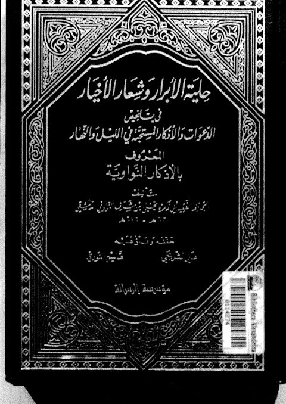
حلية الأبرار وشعار الأخيار في تلخيص الدعوات والأذكار المستحبة في الليل والنهار (الأذكار النواوية) حلية الأبرار وشعار الأخيار في تلخيص الدعوات والأذكار المستحبة في الليل والنهار (الأذكار النواوية) يحيى بن شرف النووي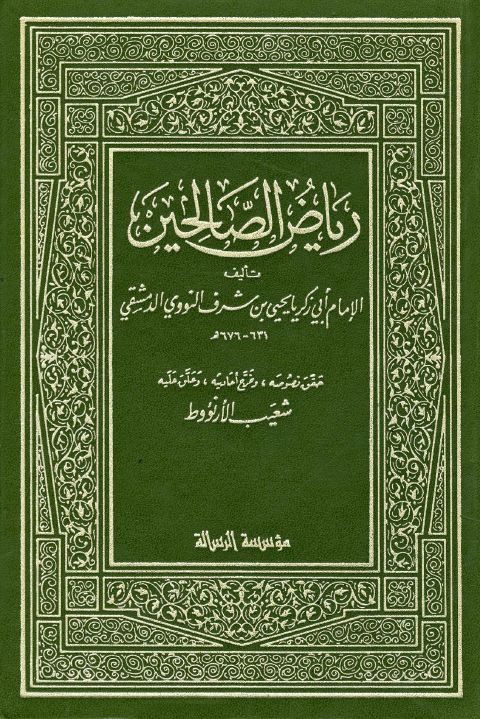
رياض الصالحين رياض الصالحين يحيي بن شرف النووي شرح لمعة الاعتقاد الهادي إلى سبيل الرشاد- العثيمين
شرح لمعة الاعتقاد الهادي إلى سبيل الرشاد- العثيمين
صالح بن عبد العزيز آل الشيخ • سالم بن محمد الجزائري
شرح لمعة الاعتقاد الهادي إلى سبيل الرشاد- العثيمين
شرح لمعة الاعتقاد الهادي إلى سبيل الرشاد- العثيمين
صالح بن عبد العزيز آل الشيخ • سالم بن محمد الجزائري
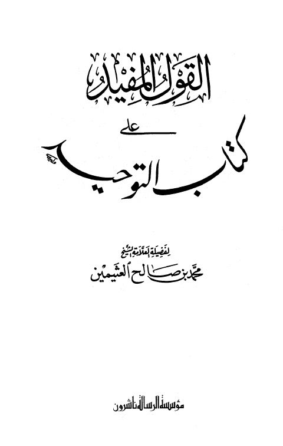
القول المفيد على كتاب التوحيد- ط. الرسالة القول المفيد على كتاب التوحيد- ط. الرسالة محمد بن صالح العثيمين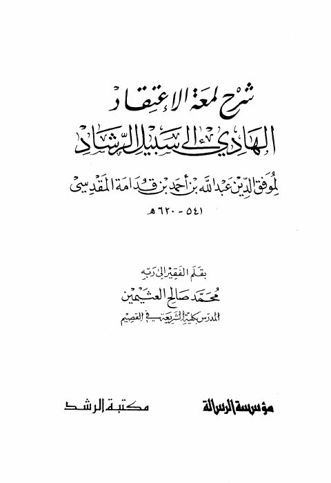
شرح لمعة الاعتقاد الهادي إلى سبيل الرشاد لموفق الدين بن قدامة المقدسي شرح لمعة الاعتقاد الهادي إلى سبيل الرشاد لموفق الدين بن قدامة المقدسي محمد صالح العثيمين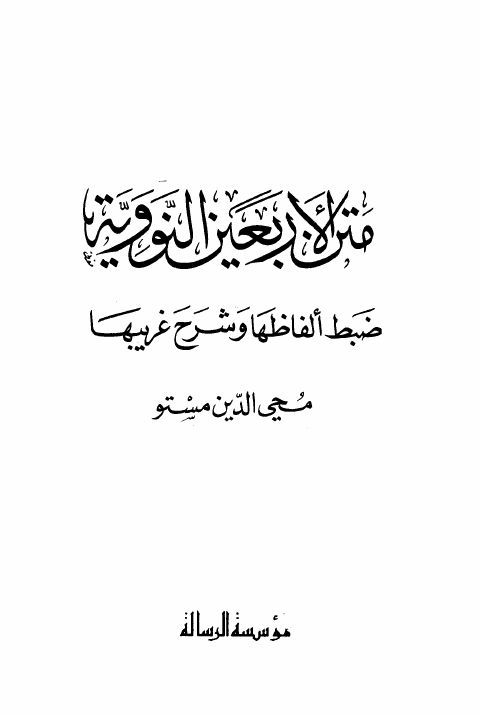
متن الأربعين النووية- ط الرسالة متن الأربعين النووية- ط الرسالة يحيى بن شرف النووي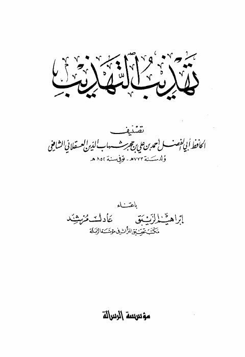
تهذيب التهذيب- ت. الزيبق تهذيب التهذيب- ت. الزيبق أحمد بن علي بن حجر العسقلاني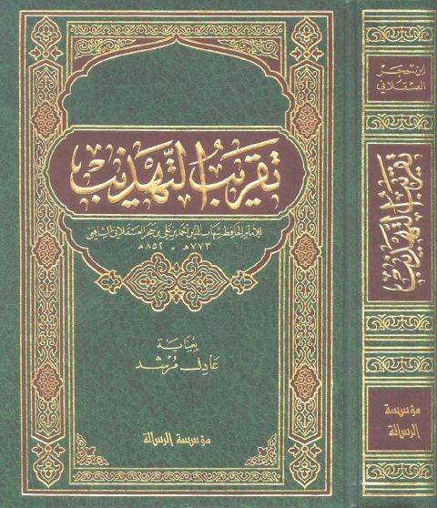
تقريب التهذيب- ط. الرسالة تقريب التهذيب- ط. الرسالة أحمد بن علي بن حجر العسقلاني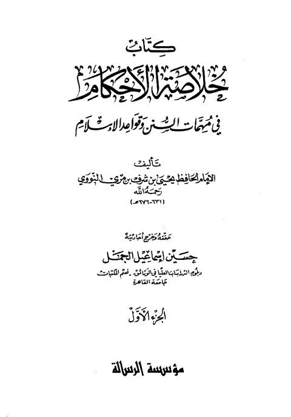
خلاصة الأحكام في مهمات السنن وقواعد الإسلام خلاصة الأحكام في مهمات السنن وقواعد الإسلام يحيى بن شرف النووي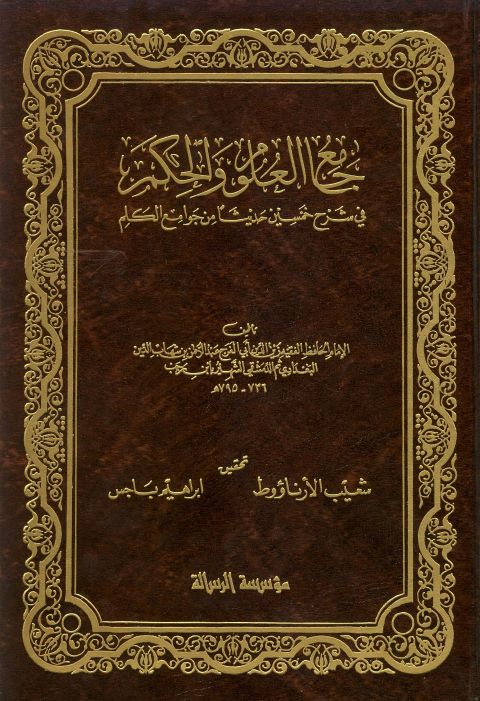
جامع العلوم والحكم في شرح خمسين حديثًا من جوامع الكلم- ط الرسالة جامع العلوم والحكم في شرح خمسين حديثًا من جوامع الكلم- ط الرسالة عبد الرحمن البغدادي بن رجب الحنبلي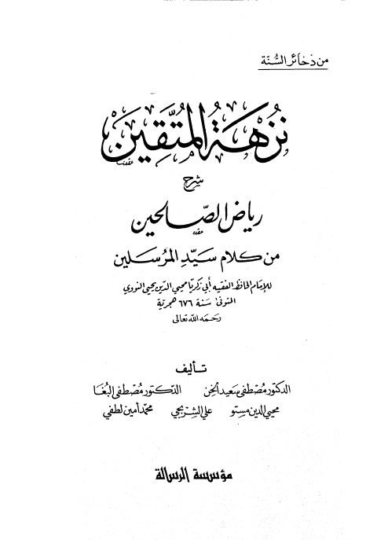
نزهة المتقين شرح رياض الصالحين من كلام سيد المرسلين نزهة المتقين شرح رياض الصالحين من كلام سيد المرسلين يحيى بن شرف النووي المعجم المفهرس أو تجريد أسانيد الكتب المشهورة والأجزاء المنثورة- الرسالة
المعجم المفهرس أو تجريد أسانيد الكتب المشهورة والأجزاء المنثورة- الرسالة
أحمد بن علي بن حجر العسقلاني
المعجم المفهرس أو تجريد أسانيد الكتب المشهورة والأجزاء المنثورة- الرسالة
المعجم المفهرس أو تجريد أسانيد الكتب المشهورة والأجزاء المنثورة- الرسالة
أحمد بن علي بن حجر العسقلاني
 بلوغ المرام من أدلة الأحكام- ت الشلاحي
بلوغ المرام من أدلة الأحكام- ت الشلاحي
أحمد بن علي بن حجر العسقلاني
بلوغ المرام من أدلة الأحكام- ت الشلاحي
بلوغ المرام من أدلة الأحكام- ت الشلاحي
أحمد بن علي بن حجر العسقلاني
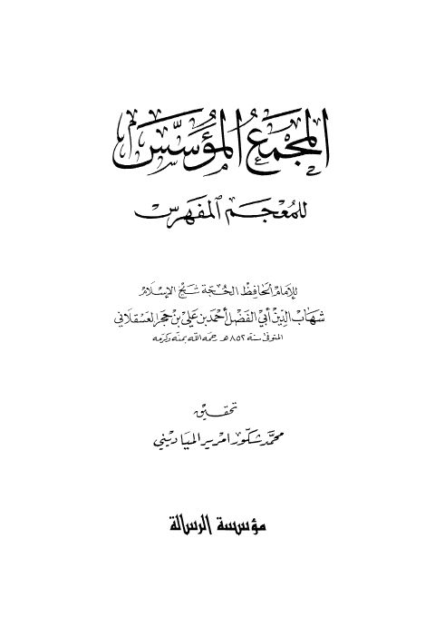
المجمع المؤسس للمعجم المفهرس- ت. المياديني المجمع المؤسس للمعجم المفهرس- ت. المياديني أحمد بن علي بن حجر العسقلاني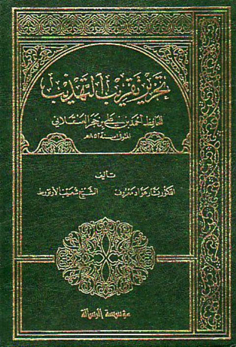
تحرير تقريب التهذيب للعسقلاني تحرير تقريب التهذيب للعسقلاني أحمد بن علي بن حجر العسقلاني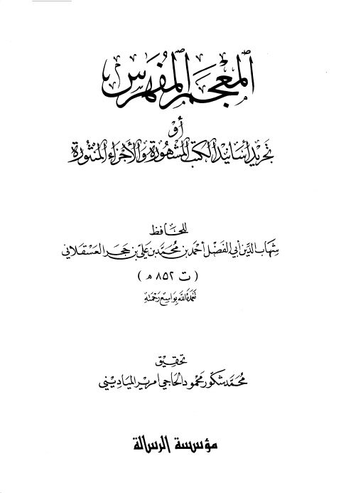
المعجم المفهرس أو تحرير أسانيد الكتب المشهورة والأجزاء المنثورة المعجم المفهرس أو تحرير أسانيد الكتب المشهورة والأجزاء المنثورة أحمد بن محمد علي بن حجر العسقلاني المنهاج في شرح صحيح مسلم بن الحجاج- أجزاء
المنهاج في شرح صحيح مسلم بن الحجاج- أجزاء
يحيى بن شرف النووي
المنهاج في شرح صحيح مسلم بن الحجاج- أجزاء
المنهاج في شرح صحيح مسلم بن الحجاج- أجزاء
يحيى بن شرف النووي
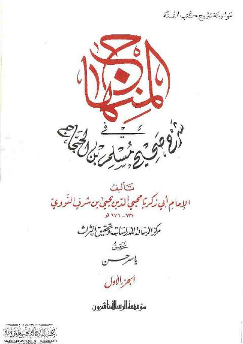
المنهاج في شرح صحيح مسلم بن الحجاج- مدمجة المنهاج في شرح صحيح مسلم بن الحجاج- مدمجة يحيى بن شرف النووي